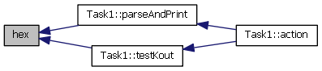

#include "object/o_stream.h"
Include-Abhängigkeitsdiagramm für o_stream.cc:

gehe zum Quellcode dieser Datei
Funktionen | |
| O_Stream & | bin (O_Stream &os) |
| switch basis of o_stream to binary | |
| O_Stream & | dec (O_Stream &os) |
| switch basis of o_stream to decimal | |
| O_Stream & | endl (O_Stream &os) |
| print buffer after adding a newline | |
| O_Stream & | flush (O_Stream &os) |
| O_Stream & | hex (O_Stream &os) |
| switch basis of o_stream to hexadecimal | |
| O_Stream & | oct (O_Stream &os) |
| switch basis of o_stream to octal | |
| int | ulongToChar (unsigned long n, char *stack, int base) |
Ausführliche Beschreibung
Definiert in Datei o_stream.cc.
Dokumentation der Funktionen
switch basis of o_stream to binary
- Noch zu erledigen:
- implementieren
Definiert in Zeile 168 der Datei o_stream.cc.
Hier ist ein Graph der zeigt, wo diese Funktion aufgerufen wird:

switch basis of o_stream to decimal
- Noch zu erledigen:
- implementieren
Definiert in Zeile 180 der Datei o_stream.cc.
Hier ist ein Graph der zeigt, wo diese Funktion aufgerufen wird:

print buffer after adding a newline
- Noch zu erledigen:
- implementieren
Definiert in Zeile 161 der Datei o_stream.cc.
Hier ist ein Graph, der zeigt, was diese Funktion aufruft:

Hier ist ein Graph der zeigt, wo diese Funktion aufgerufen wird:

Definiert in Zeile 191 der Datei o_stream.cc.
switch basis of o_stream to hexadecimal
- Noch zu erledigen:
- implementieren
Definiert in Zeile 186 der Datei o_stream.cc.
Hier ist ein Graph der zeigt, wo diese Funktion aufgerufen wird:

switch basis of o_stream to octal
- Noch zu erledigen:
- implementieren
Definiert in Zeile 174 der Datei o_stream.cc.
| int ulongToChar | ( | unsigned long | n, |
| char * | stack, | ||
| int | base | ||
| ) |
Definiert in Zeile 22 der Datei o_stream.cc.
Hier ist ein Graph der zeigt, wo diese Funktion aufgerufen wird: